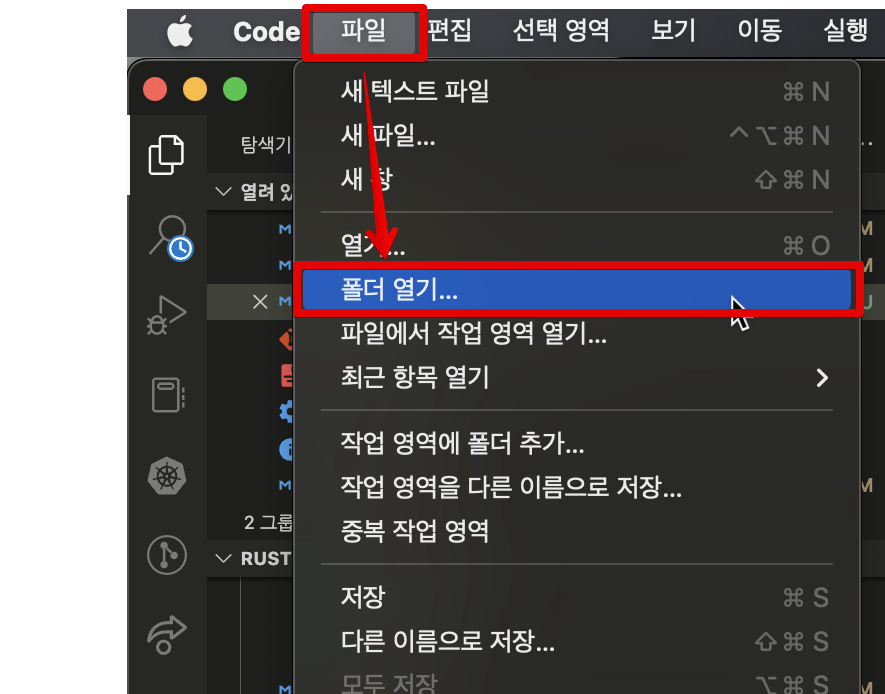

러스트 개발 환경 설정하기
러스트로 코드를 작성하기 위해, 필요한 도구들을 설치해주어야 합니다. 운영체제별로 설치 방법이 조금씩 다르므로 사용하고 계신 환경에 맞추어 설치하세요.
러스트 툴체인 설치하기
가장 먼저 러스트 언어를 컴파일해주는 컴파일러와 시스템 매니저인 cargo 를 설치합니다. 이 두 가지 도구는 rustup 이라고 하는 툴체인에 포함되어 있기 때문에, rustup만 설치하면 됩니다. 공식 홈페이지 https://rustup.rs/# 로 접속하면 운영체제별 설치 방법을 볼 수 있습니다.
macOS / Linux
맥(macOS) 또는 리눅스 사용자들은 아래 명령어를 통해 간단하게 설치가 가능합니다.
$ curl --proto '=https' --tlsv1.2 https://sh.rustup.rs -sSf | sh
Windows
윈도우 사용자의 경우 위 홈페이지에서 34비트 또는 64비트 설치 파일을 다운로드 받습니다.

Visual Studio Code 설치 및 설정하기
이 책에서는 통합 개발 환경(Integrated Development Environment, IDE)로 Visual Studio Code(이하 VSCode)를 사용합니다. 러스트에서 제공하는 컴파일, 디버깅, 언어 서버(Language server) 등의 기능을 쉽고 편리하게 사용할 수 있기 때문에 VSCode를 사용하시는 것을 추천합니다.
VSCode 설치

Visual Studio Code 다운로드 페이지로 이동한 다음, 운영체제에 맞는 설치파일을 다운받고 설치를 진행합니다.
확장 프로그램(Extension) 설치
이제 Visual Studio Code를 실행합니다. Visual Studio Code에서는 rust-analyzer란 확장 프로그램 하나만 설치하면 됩니다. rust-analyzer는 러스트 코드를 작성하는데 많은 도움을 주는 확장 프로그램입니다. 코드 자동완성, 에러 표시, 관련 문서 표시 등 다양한 기능이 있지만 가장 좋은 기능 중 하나는 변수의 타입을 추측해서 화면에 표시해주는 것입니다. 자세한 내용은 나중에 소스코드를 작성할 때 다시 살펴보겠습니다.

설치를 위해서는 화면 왼쪽의 블록 모양 버튼을 누른 다음, rust-analyzer를 검색합니다. 가장 위에 나오는 확장 프로그램을 설치합니다.
프로젝트 생성하기
프로그래밍에서는 항상 프로젝트를 폴더 단위로 관리합니다. 여기서는 새로운 프로젝트를 하나 생성해 보겠습니다.

Visual Studio Code의 상단 메뉴에서, "파일 - 폴더 열기"를 클릭합니다. 폴더를 새로 생성한 다음, 해당 폴더를 선택합니다. 그러면 창이 새로고침되고 빈 프로젝트 화면이 나타납니다.
파이썬 폴더 만들기
우리는 파이썬 코드와 러스트 코드를 비교하면서 러스트 문법을 배워나갈 것입니다. 따라서 파이썬 프로젝트와 러스트 프로젝트를 같은 폴더 밑에 만들어 두겠습니다. 현재 경로가 /code/temp/라고 했을 때, 하위 폴더로 "python" 폴더를 하나 생성합니다. 그리고 폴더 안에 파이썬 코드가 들어갈 main.py 모듈을 생성합니다. 현재 파일 구조는 다음과 같습니다.
.
└── python
└── main.py
러스트 폴더 만들기
러스트 프로젝트를 시작하는 방법은 두 가지가 있습니다.
아직 과정을 따라하지 마세요! 저희는 두 번째 방법으로 폴더를 만들 것입니다.
첫째, 터미널에서 빈 폴더에서 cargo init 으로 프로젝트를 시작합니다. 이 경우에는 현재 폴더에 러스트 프로젝트가 생성됩니다.
$ cargo init
예를 들어, 터미널에서 현재 경로가 /code/temp/ 라고 했을 때, cargo init 을 수행하면 이 폴더가 프로젝트 폴더가 됩니다. 방금 파이썬 폴더를 새로 만들었기 대문에, 현재 폴더의 파일 목록을 출력하는 ls 명령어를 수행한 결과는 다음과 같습니다.
/code/temp $ ls
Cargo.toml src python
현재 폴더에서 cargo init 으로 프로젝트를 생성하는 경우에는 현재 폴더 이름이 프로젝트 이름이 됩니다. 따라서 현재 생성된 프로젝트 이름은 "temp"가 됩니다. 프로젝트 이름을 확인하는 방법은 잠시 후에 Cargo.toml 파일을 설명하면서 다루겠습니다.
이제 두 번째 방법으로 프로젝트 만들기를 함께 해보겠습니다. 먼저 터미널을 열기 위해서 메뉴의 "터미널 - 새 터미널"을 클릭합니다. 또는 단축키 Ctrl + Shift + `를 입력해도 됩니다. 이제 터미널에 cargo new <프로젝트명> 명령어를 입력해서 프로젝트 이름을 직접 설정할 수 있습니다. 이 경우에는 하위 폴더가 해당 이름으로 만들어집니다. 현재 폴더 경로가 동일하게 /code/temp/ 라고 했을 때, 다음과 같이 실행해 보겠습니다.
$ cargo new rust_part
그러면 현재 폴더 밑에 "rust_part"라는 폴더가 생성되고, 이 폴더 안에 파일이 생성됩니다. 이제 현재 경로에서는 아래와 같이 두 개의 폴더가 존재합니다.
/code/temp $ ls
rust_part python
최종적으로 현재 폴더의 파일 구조는 다음과 같습니다.
.
├── rust_part
│ ├── Cargo.toml
│ └── src
└── python
└── main.py
러스트 폴더 구조
러스트의 프로젝트 폴더에는 다음과 같은 파일 구조가 만들어집니다.
.
├── Cargo.toml
└── src
└── main.rs
먼저 Cargo.toml 파일은 프로젝트의 모든 설정값을 가지고 있는 파일입니다. 파일의 구조는 아래와 같이 생겼습니다.
[package]
name = "rust_part"
version = "0.1.0"
edition = "2021"
# See more keys and their definitions at https://doc.rust-lang.org/cargo/reference/manifest.html
[dependencies]
[package]부분에는 현재 프로젝트의 이름과 버전, 그리고 러스트 에디션 버전이 들어 있습니다. 러스트 에디션은 현재 연도보다 이전 연도가 들어 있을 수도 있는데, 이는 러스트 버전의 호환성을 위해서 버전을 에디션으로 구분하고 있기 때문에 그렇습니다.[dependencies]는 현재 프로젝트에서 설치하는 크레이트(러스트에서는 패키지를 크레이트(crate)라고 부릅니다)의 이름과 버전이 들어가게 됩니다. 나중에 크레이트를 설치할 때 자세히 다루도록 하겠습니다.
src 폴더가 실제 러스트 소스코드가 들어가는 곳입니다. 현재는 코드의 시작 지점(entry point)인 main.rs 파일만 들어 있습니다. 해당 파일에는 main() 함수가 들어 있는데, main.rs 가 컴파일되고 바이너리가 실행될 때 바로 이 main() 함수가 실행됩니다. 따라서 반드시 main.rs 파일이 존재해야 하고, 이 파일 안에 main() 함수가 존재해야 코드가 컴파일되고 실행될 수 있습니다.